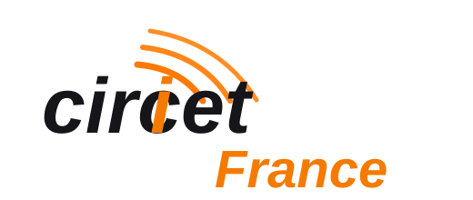

D
Déploiement
Création et extension de réseaux fibre optique avec préparation, tirage et contrôle des liaisons.
Voir le serviceEntreprise spécialisée dans le déploiement, le raccordement et la maintenance fibre optique, WAS TELECOM intervient avec rigueur à Saint-Ouen-l'Aumône et en Île-de-France.
Création et extension de réseaux fibre optique avec préparation, tirage et contrôle des liaisons.
Voir le serviceRaccordement fibre optique pour logements, entreprises, sites techniques et infrastructures télécoms.
Voir le serviceDiagnostic, dépannage, mesures et remise en service pour garantir la continuité du réseau.
Voir le serviceLes prestations ci-dessous sont faciles à faire évoluer selon vos offres exactes.
WAS TELECOM intervient en sous-traitance sur des opérations de raccordement, de déploiement et de maintenance, avec une exigence de qualité adaptée aux donneurs d'ordre nationaux.
Expérience terrain sur des missions réalisées pour le compte de grands opérateurs et intégrateurs du secteur.

Chaque chantier doit être préparé, contrôlé et livré proprement, avec une attention particulière aux consignes de sécurité et à la satisfaction client.

Préparation du point de terminaison, passage fibre et vérification de la liaison.

Diagnostic terrain, mesures optiques et contrôle de conformité de l'installation.

Travaux de raccordement et soudure avec tests pour valider la qualité du signal.
Intervention planifiée rapidement, chantier propre et explications claires à la livraison.
Gestionnaire immobilier
Équipe sérieuse, ponctuelle et attentive aux contraintes d'exploitation de notre site.
Entreprise locale
Diagnostic efficace et remise en service dans les délais annoncés.
Client professionnel
Contactez WAS TELECOM pour un raccordement, une maintenance ou une intervention technique.